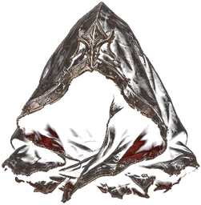

1 · Set-Teil im Item-Fenster
Gerlindes Schleier
Set · Kappe · Stufe 9
Rüstung 14+6 Konstitution III
+8 % Leben III
Tracht der Wäscherinnen
Gerlindes Schleier
Nasses Leinen (Lederwams)
Ertränkter Ring
2 Teile: +8 % Leben
3 Teile: Lebensraub heilt doppelt, solange du unter 50 % Leben bist
Kampfkraft 4.210 → 4.560 +8 %
statt Eisenhelm
Grün ist als Beutefarbe schon reserviert. Ein Set-Teil zeigt, welche Teile du trägst (grün) und welche fehlen (grau).
Es nutzt die vorhandenen Item-Bilder – keine neuen Grafiken.
2 · Fund beim Krypta-Boss
Sieg
Sicher · +10 % Gold · 48 % Leben übrig

Gerlindes SchleierSet · Tracht der Wäscherinnen 2/3 · ▲ +8 % Zähe Stiefel des BärenMagisch
Zähe Stiefel des BärenMagisch+412 Gold · +1.130 EP
Krypta-Stufe 3 bezwungen.
Krypta-Stufe 3 bezwungen.
Set-Teile fallen nur beim Boss ihrer Krypta, ab Krypta-Stufe 2 (Chance ~20 %, steigt je Stufe).
Damit haben die Krypta-Stufen ein Sammelziel, und kein anderes System wird schwächer.
3 · Übersicht bei Schwester Ilse
Grab-Sets je 3 Teile
Tracht der Wäscherinnen2/3Gruft der Wäscherinnen · 2: +8 % Leben · 3: Lebensraub heilt doppelt unter 50 % Leben
Kutte des Verseuchten1/3Die Pestkapelle · 2: +10 % Giftschaden · 3: dein Gift heilt dich
Schürze des Metzgers0/3Das Schlachthaus · 2: +6 % Krit · 3: Henker-Schwelle +10 %
Ornat des Glöckners0/3Turm der Glocke · 2: +10 % Rüstung · 3: jede 4. Betäubung prallt zurück
Krone ohne Träger0/3Die Glocke · 2: +6 % Schaden · 3: der erste Zauber wirkt doppelt
Balance: 2 Teile ≈ ein guter Bonus der Stufe III, 3 Teile ≈ ein Sonderbonus (wie auf seltenen Items).
Set-Teile haben nur 2 feste Boni – ein volles Set ist etwa so stark wie drei gute seltene Teile, aber mit eigenem Stil.
Geeicht würde wie üblich mit tests/calib.mjs und Bot-Läufen. Noch nicht gebaut – wartet auf Freigabe.